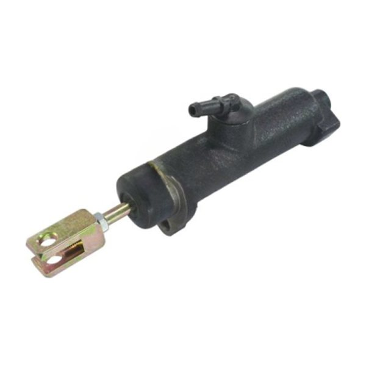

Available
Email for a quote
Daewoo 12264-3011 Brake Master Cylinder
| OEM part number | 12264-3011 |
| Fits | Daewoo |
| Models / notes | LD20/30S-2 D35S/G35S |
| Category | Brakes |
| Type | Aftermarket replacement |
Send us the quantity you need and we'll reply with pricing, usually within 24 hours. Not the exact part? We can source it. Send the part number or a photo.